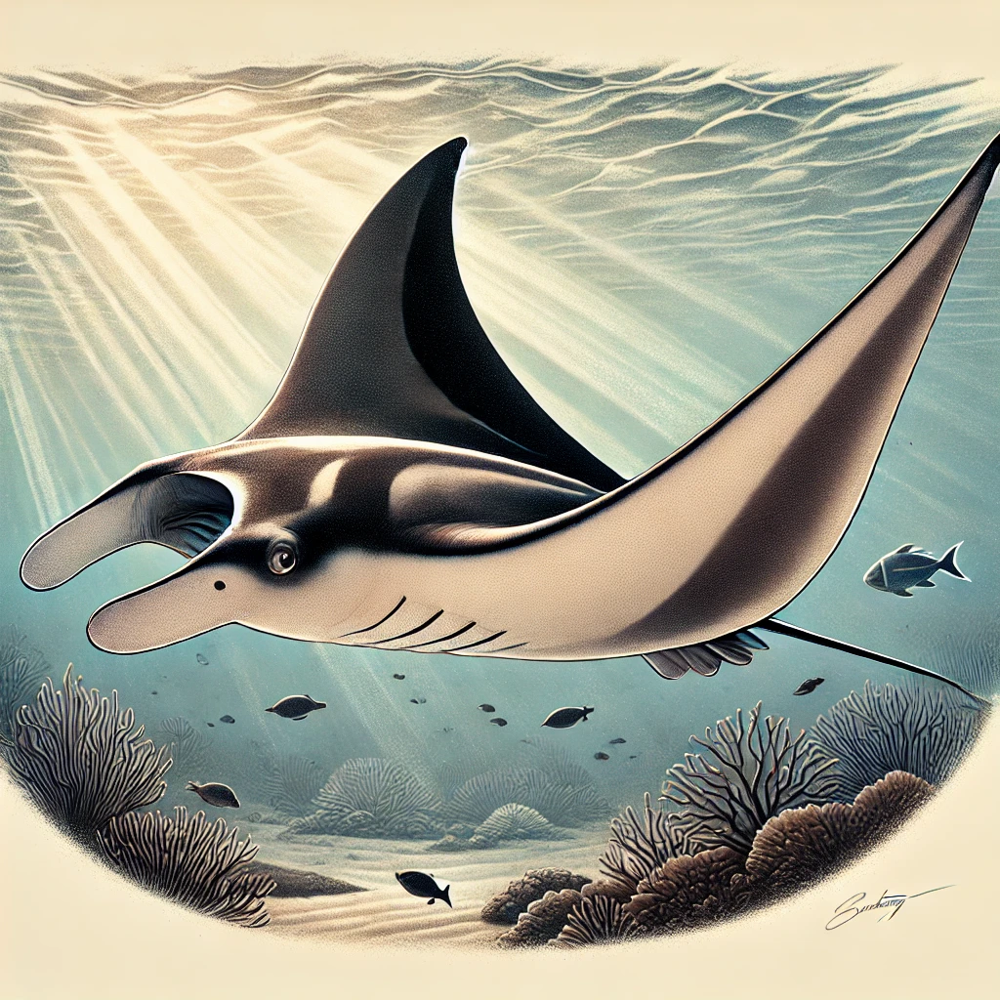
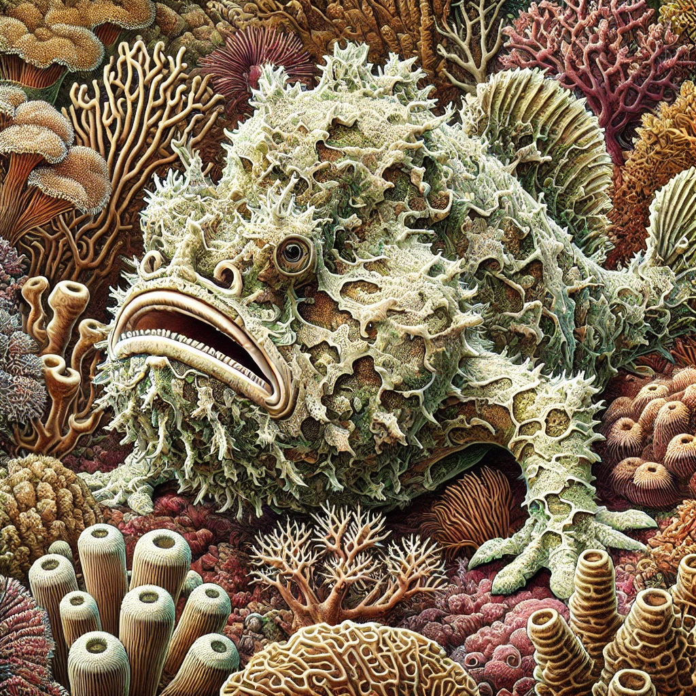
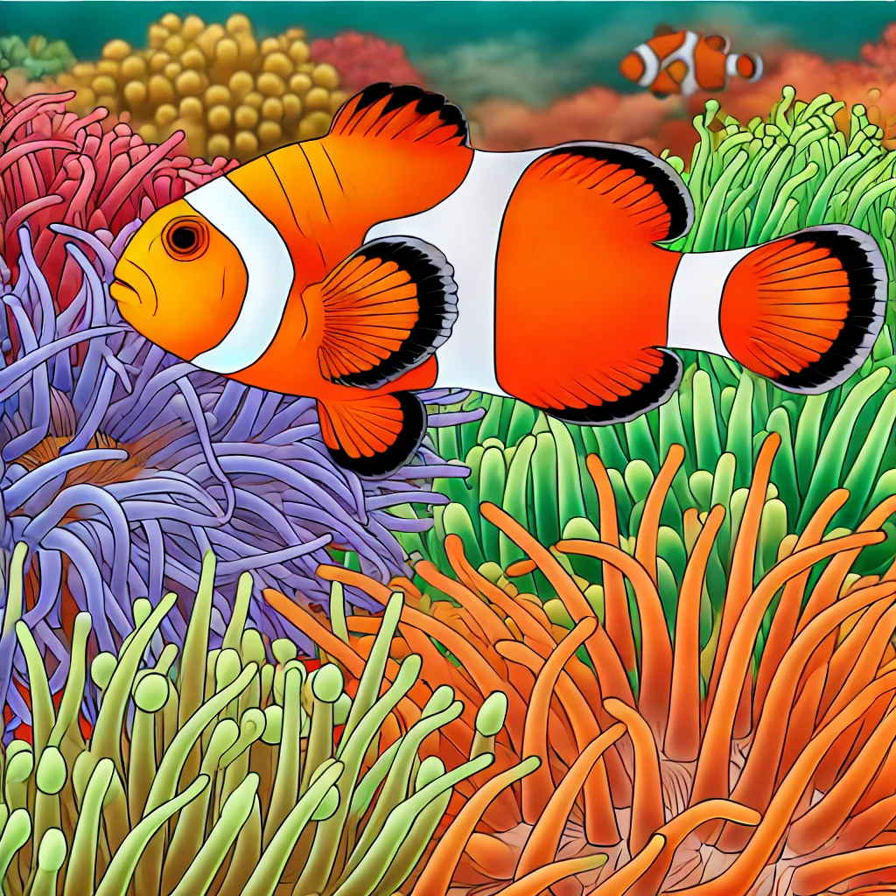

とにかく大きくて迫力のあるのが好き！
レアなものに惹かれる
キモ可愛いのが好き
あなたにピッタリの海洋生物は・・・！
ジンベエザメ

すべての魚類の中で現生最大の種。
水族館や生け簀で飼われているジンベエザメには簡単にあえますが、
野生のジンベエに会うのは世界でも限られたポイントのみ。
あなたがもし幸運にも、海で悠々と泳ぐ野生のジンベエに会ったなら、
きっとその感動を一生忘れることはないでしょう。
マンタ
海の中をまるで飛ぶように優雅に泳ぐマンタ。
大きいものになるとレア度が増しますが、
比較的世界中のポイントで会うことができます。
中でも全身ブラックのブラックマンタのかっこよさと言ったら！
カエルアンコウ
受け口のなんともいえない表情がキモ可愛いカエルアンコウ。
オレンジの派手な個体から真っ黒な個体まで、
カラーリングも、サイズ感も様々です。
普段は岩の上にぴったりくっついていますが、
時々ひらひらと泳いでいる姿を見れることも！
水中カメラガチ勢の影のアイドル。
カクレクマノミ
みんな大好き、海のアイドル、ニモ。
本名はカクレクマノミと言って、クマノミの仲間です。
クマノミにはいろいろな種類がいますが、
カクレクマノミは、体に白い線が三本あります。
一本線だったら、ハマクマノミ。
二本線だったら、クマノミ。
三本線だったら、カクレクマノミ。
覚え方は、「イチハマ、ニクマ、サンカクレ」